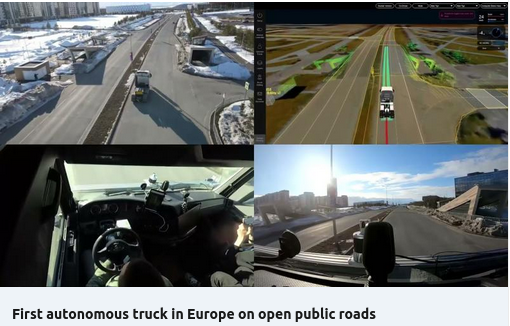
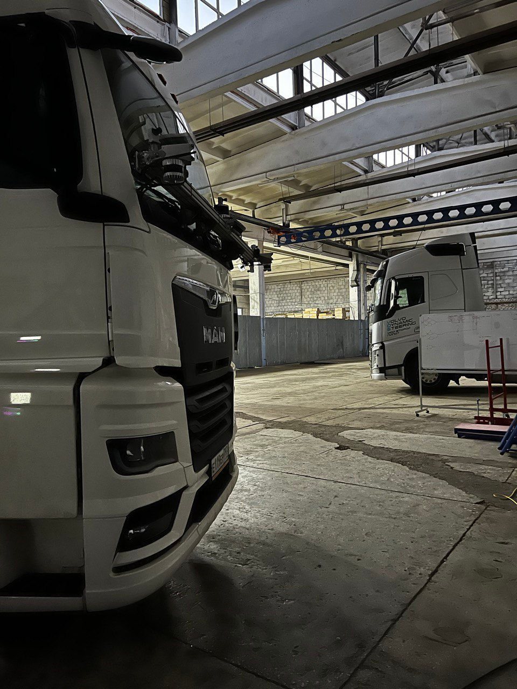
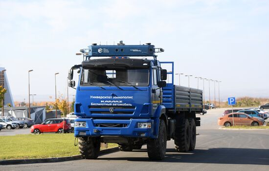

About
I am a Robotics Engineer specializing in autonomous driving, multi-modal perception, computer vision, and control systems. My work focuses on real-time 3D object detection, sensor fusion, MPC-based control, and end-to-end autonomous driving systems.
My experience combines research, industrial software development, and technical leadership across autonomous trucks, autonomous racing, mobile robotics, and self-driving car platforms. I have worked with C/C++, Python, ROS, PyTorch, computer vision, deep learning, sensor fusion, and optimal control.
I am especially interested in robust 3D perception, self-supervised feature learning, multi-modal detection under limited labeled data, and scalable autonomy systems for real-world deployment.
Featured Projects

A2RL / Team FlyEagle — Autonomous Racing Perception
Developed real-time 3D object detection algorithms for autonomous racing systems while leading a small computer vision team. The work focused on high-speed perception, robustness under dynamic racing conditions, and integration into an autonomous driving stack.
Result: Contributed to achieving 2nd place in the A2RL Silver Race.
Technologies: Computer Vision, 3D Object Detection, Sensor Fusion, PyTorch, ROS, Autonomous Driving.

Khalifa University — Self-Driving Cars Laboratory
Conducted research in autonomous driving perception within the Self-Driving Cars Laboratory at Khalifa University. The work focused on perception systems, autonomous mobility platforms, and applied robotics research.
Focus: Self-driving cars, perception, 3D detection, autonomous mobility.

168ROBOTICS — Multi-modal 3D Object Detection
Researched and developed multi-modal 3D object detection methods for autonomous mobile robotics platforms. The work involved deep learning, sensor fusion, model evaluation, and integration into real robotic systems.
Result: Improved detection accuracy from 70% to 80%.
Technologies: Deep Learning, Vision Transformers, Multi-modal Perception, Sensor Fusion, 3D Object Detection.

Ozon Tech — Autonomous Truck Control System
Developed C/C++ software components for autonomous truck control systems and contributed to integration within the full autonomous driving stack. The work included control-system design, testing, debugging, and applied robotics software development.
Impact: Contributed to early autonomous truck systems deployment in Europe.
Technologies: C/C++, Control Systems, MPC, ROS, Autonomous Trucks, Robotics Software.

Innopolis University — Self-Driving Cars
Worked on self-driving car development in a university robotics laboratory, including control modules, network interfaces, low-level software, and system integration.
Focus: Autonomous vehicles, control systems, embedded software, low-level integration.

Battle of Robots — RobOZON Team
Participated in the Battle of Robots competition with team RobOZON, contributing to the development and preparation of a competitive robotic platform.
Focus: Robotics engineering, mechanical integration, testing, competition-driven development.
Additional Autonomous Vehicle Work
Additional work includes autonomous trucks at Ozon Tech and self-driving vehicle projects at Innopolis University.



Research & Publications
Selected Research Areas
My research focuses on autonomous driving, multi-modal perception, real-time 3D object detection, sensor fusion, vision transformers, and end-to-end autonomous driving models.
- ICRA 2025: Multi-modal end-to-end autonomous driving with temporal guidance.
- IROS 2025: Lightweight real-time 3D detection for autonomous driving and robotics.
- FLLM 2024: VLM-based autonomous driving assistant for complex road scenes.
Entrepreneurship
TECHFRENS
Leading a small development team delivering blockchain-related software projects from concept to deployment.
Straighten Up!
Founded a startup focused on posture, health, fitness, and well-being. The project is registered at Skolkovo Foundation.
Education
Skoltech
GPA: 5.0/5.0
Focus: Autonomous Driving, Multi-modal Perception, Deep Learning. Research: 3D Object Detection using Vision Transformers and Sensor Fusion.
Innopolis University
GPA: 4.6/5.0
Thesis: Controller design for autonomous vehicles using MPC, CLF/CBF, and optimization-based control.
Skills
Contact
I am interested in robotics, autonomous driving, computer vision, multi-modal perception, and applied AI roles.
Email: Zakhar.Yagudin@skoltech.ru
LinkedIn: linkedin.com/in/zakhar-yagudin
CV: Download PDF